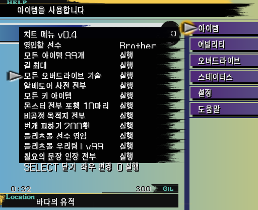
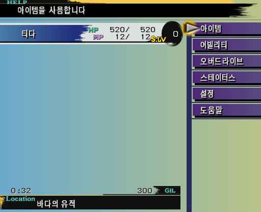

게임 소개
블리츠볼 선수 티다가 1000년 뒤의 세계 스피라로 떨어져, 소환사 유나의 여행에 함께하며 「신」에 맞서는 이야기입니다. 인터내셔널판은 다크 소환수, 페넌스 같은 추가 보스와 엑스퍼트 스피어 판이 들어간 판이며, 한국에서는 정식 한국어판으로 나왔습니다. 이 패치는 번역은 건드리지 않고 치트와 편의 기능만 더합니다.
- 원작
- 파이널 판타지 X 인터내셔널 (스퀘어, PS2)
- 장르
- RPG
- 바탕
- 한국판 ISO (SLPM-67513)
- 추가 기능
- 치트 메뉴 21항목, 전투 후 파티 전원 AP
전원 AP (항상 켜짐)
원래 게임은 전투가 끝날 때 한 번도 행동하지 않았거나 전투불능인 캐릭터의 AP를 0으로 되돌립니다. 그래서 일곱 명을 키우려면 전투마다 캐릭터를 하나씩 교대로 내보내야 했습니다.
이 패치는 그 판정을 바꿔, 파티에 합류한 캐릭터라면 대기 멤버·전투불능 상태여도 모두 AP를 받습니다. 치트 메뉴의 AP 배율과 같이 쓰면 스피어 판을 훨씬 빨리 채울 수 있습니다. 이 기능은 끌 수 없습니다(끄고 싶으면 치트 없이 원본 ISO로 하세요).
치트 메뉴
필드에서 △로 메뉴를 연 뒤 SELECT를 누르면 「치트 메뉴」가 뜹니다. ↑↓로 고르고, ←→로 값을 바꾸고, ○로 실행합니다. SELECT나 ×로 닫습니다. 메뉴가 열려 있는 동안 원래 메뉴는 움직이지 않습니다.
설정 (←→로 변경)
| AP 배율 | 1~5배. 적을 쓰러뜨려 얻는 AP에 곱합니다. 더블 AP·트리플 AP 어빌리티와 겹칩니다. |
|---|---|
| 길 배율 | 1~5배. 전투로 얻는 길에 곱합니다 (최대 999,999,999). |
| 전투 HP MP 무한 | 전투 중 아군 HP·MP가 계속 최대로 유지됩니다(전투불능이 된 캐릭터는 되살리지 않음). |
| 오버드라이브 항상 최대 | 전투 중 아군 오버드라이브 게이지가 항상 가득 찹니다. |
| 데미지 한계 돌파 | 모든 공격의 데미지 상한이 9,999에서 99,999가 됩니다(무기 어빌리티 없이도). |
| 적 1타 처치 | 전투 중 적 HP가 1로 고정됩니다. |
| 아이템 99개 유지 | 가지고 있는 일반 아이템이 써도 99개로 유지됩니다. |
| 인카운터 | 보통 / 없음 / 2배. 없음은 랜덤 전투가 일어나지 않고(이벤트 전투는 그대로), 2배는 랜덤 전투가 약 2배 자주 일어납니다. |
| 전투 속도 | 1~4배. 전투 진행(애니메이션·턴)을 그만큼 빠르게 돌립니다. 소리는 그대로입니다. |
| 아이템 드롭 100% | 적이 드롭 아이템을 가지고 있으면 항상 떨어뜨립니다. |
| 영입할 선수 | 블리츠볼 「선수 영입」으로 데려올 선수: Brother, Wedge, Nimrook, Ropp, Nav Guado, Larbeight, Kiyuri, Jumal (블리츠볼 상위권 선수들). |
실행 (○로 실행)
| 모든 아이템 99개 | 포션부터 스피어류(파워·마나·스피드·어빌리티·키 스피어 Lv.1~4·마스터·클리어·텔레포트·워프 등)까지 일반 아이템 112종을 모두 99개씩 받습니다. |
|---|---|
| 길 최대 | 소지 길이 999,999,999가 됩니다. |
| 모든 오버드라이브 기술 | 오버드라이브를 모두 얻은 상태로 만듭니다(코드브레이커 「All Overdrives」 코드와 같은 값). |
| 알베도어 사전 전부 | 알베도어 사전을 전부 얻은 상태가 됩니다. |
| 모든 키 아이템 | 키 아이템을 전부 얻습니다. |
| 몬스터 전부 포획 10마리 | 몬스터 아레나의 포획 수를 모든 몬스터 10마리로 만듭니다. |
| 비공정 목적지 전부 | 비공정의 목적지를 모두 엽니다. |
| 번개 피하기 200회 | 번개 평원의 번개 피하기 횟수(누적·연속)를 200으로 만듭니다. |
| 블리츠볼 선수 영입 | 위에서 고른 선수를 비사이드 오럭스에 바로 넣습니다. 상대 팀은 다른 자유계약 선수로 빈자리를 채워 6명을 유지합니다. 오럭스가 8명으로 꽉 차 있으면 티다·와카를 뺀 마지막 선수와 맞바꿉니다. |
| 블리츠볼 우리팀 Lv99 | 오럭스 선수 전원의 블리츠볼 레벨을 99로 올립니다. |
| 칠요의 문장 인장 전부 | 일곱 캐릭터의 최강 무기(칠요의 무기)를 강화하는 문장·인장을 모두 얻습니다. 나비 잡기·번개 피하기·초코보 경주 같은 미니게임 보상을 건너뛸 수 있습니다. |
처음 값은 모두 원래 게임과 같은 값(1배·끔·보통)이라, 메뉴를 건드리지 않으면 원래 게임과 똑같이 동작합니다(전원 AP만 예외). 설정은 게임을 켤 때마다 처음 값으로 돌아갑니다(세이브에 저장되지 않음). 실행 항목은 진행 플래그를 한꺼번에 바꾸므로, 쓰기 전에 세이브해 두세요.
스피어 판 쉬운 가이드
결론부터
- 처음이면 표준(오리지널) 스피어 판이 쉽습니다. 각 캐릭터가 자기 길 위에서 시작하고, 그 길만 따라가면 역할(유나=백마법, 루루=흑마법, 아론=탱커, 티다=속도)대로 자랍니다.
- 순서: ① 자기 길을 끝까지 → ② 잠금(키 스피어)을 열고 남의 길로 → ③ 막바지에 약한 칸을 강한 칸으로 바꾸기(능력치 최대).
- 치트에서 AP 배율을 올리고 「모든 아이템 99개」를 실행하면 스피어가 99개씩 생기므로, 막히는 곳은 마스터 스피어로 바로 켜면 됩니다.
기본 원리 3줄
- 전투에서 AP를 모으면 스피어 레벨(S.Lv)이 오릅니다.
- S.Lv 1개로 판 위에서 한 칸 이동합니다. 이미 켜진 칸 위로는 한 번에 최대 4칸까지 건너갈 수 있습니다.
- 칸에 맞는 종류의 스피어를 써서 켜면 그 능력치·기술이 영구히 붙습니다. 이동(S.Lv)과 켜기(스피어)는 따로입니다.
스피어 종류
| 파워 스피어 | HP·힘·방어 칸 켜기 |
|---|---|
| 마나 스피어 | MP·마력·마법방어 칸 켜기 |
| 스피드 스피어 | 민첩·회피·명중 칸 켜기 |
| 어빌리티 스피어 | 기술·마법 칸 켜기 |
| 포춘 스피어 | 운 칸 켜기 |
| 키 스피어 Lv.1~4 | 같은 레벨의 잠금 칸을 부숨 → 다른 캐릭터 길로 넘어갈 수 있음 |
| 리턴·프렌드·텔레포트·워프 | 순간이동. 리턴=자기가 켰던 칸으로, 프렌드=동료가 있는 칸으로, 텔레포트=동료가 켰던 칸으로, 워프=아무 칸으로 |
| 어트리뷰트·스킬·스페셜·백마법·흑마법 | 동료가 이미 켠 같은 종류 칸을 멀리서도 켜기 |
| 마스터 스피어 | 아무 칸이나 켜기(동료가 안 켠 칸도 가능) |
| 클리어 스피어 | 능력치 칸을 지워 빈칸으로 만들기(기술·잠금 칸은 못 지움) |
| HP·힘·방어… 스피어 | 빈칸에 새 능력치 칸(+4 등)을 만들기 |
표준 판과 엑스퍼트 판
표준은 각자 자기 길에서 시작하고 약 860칸, 엑스퍼트(인터내셔널판에서 추가)는 전원이 한가운데서 시작하고 약 720칸이라 계획이 필요하고 능력치 최대치에 조금 불리합니다. 한 번 고르면 도중에 바꿀 수 없습니다. 스피어 판을 열었을 때 캐릭터들이 한가운데 모여 있으면 엑스퍼트입니다.
캐릭터별 추천 경로
| 티다 | 자기 길(속도·시간 마법·물리) → 아론 길(힘). 헤이스트를 최우선으로. |
|---|---|
| 유나 | 자기 길(백마법·소환) → 루루 길(흑마법). 마력이 높아 흑마법도 잘 씁니다. |
| 루루 | 자기 길(흑마법) → 유나 길(백마법). 유나와 서로 길을 바꿉니다. |
| 아론 | 자기 길(힘·HP·방어·브레이크 기술) → 와카 또는 티다 길. |
| 와카 | 자기 길(명중·상태이상 공격) → 아론 길(힘). |
| 리쿠 | 자기 길(민첩·훔치기·아이템 사용) → 티다 길(속도) 또는 루루 길. |
| 키마리 | 정해진 길이 없습니다. 먼저 리쿠 길의 훔치기·사용을 따고(리쿠 합류 전에 쓸 수 있음), 이후 유나·루루 길로 마법사. 가가제트산 키마리 혼자 싸우는 전투에서 Lv.3 키 스피어를 훔칠 수 있습니다. |
막바지: 능력치 최대(255)
클리어 스피어로 +1·+2 같은 약한 칸을 지우고, 빈칸에 힘 스피어 등으로 +4 칸을 만든 뒤 켭니다. 새로 만든 칸은 모든 캐릭터의 판에 똑같이 생깁니다. 원래 클리어 스피어는 몬스터 아레나에서 1만 길에 사야 하지만, 치트의 「모든 아이템 99개」로 바로 얻을 수 있습니다. 우선순위는 힘 → 방어 → 마법방어 → 민첩(170 정도면 충분) 순을 많이 추천합니다.
자주 막히는 부분
- 이동이 안 된다 → S.Lv가 0입니다. 전투를 더 하세요(AP 배율 치트).
- 켜지지 않는다 → 칸과 스피어 종류가 안 맞습니다(위 표).
- 잠금 칸 앞에서 멈춤 → 같은 레벨 키 스피어가 필요합니다.
- 너무 멀다 → 텔레포트·워프 스피어로 이동.
- 엉뚱한 길로 갔다 → 괜찮습니다. 나중에 얼마든지 메울 수 있어서 망치는 방법이 없습니다.
가이드 출처: FF Walkthrough, Game8, Jegged (스피어), Jegged (능력치 최대), GamerGuides, Steam·Reddit 토론. 스피어 이름은 영문판 기준이라 한국판 표기와 조금 다를 수 있습니다.
화면


적용 방법
한국판 ISO 준비
파이널 판타지 X 인터내셔널 한국판(SLPM-67513) ISO가 필요합니다. 크기 4,615,176,192바이트, MD5
d393791519de62a29923c8d4a6af89ce여야 합니다. CHD 파일만 있다면 MAME의chdman extractdvd -i 파일.chd -o 파일.iso로 ISO로 바꿉니다.패치 적용
ISO에
FFX_International_KR_Cheat_v0.4.xdelta를 xdelta로 적용합니다. PC에서는 Delta Patcher나 xdelta3(xdelta3 -d -s 원본.iso 패치.xdelta 결과.iso)를 쓰면 됩니다. 결과 ISO CRC32는62BA8051입니다.실행
PS2 에뮬레이터(PCSX2, AetherSX2·NetherSX2 등)에서 실행합니다. 게임 안에서 메뉴(△) → SELECT를 눌러 「치트 메뉴 v0.4」가 뜨면 제대로 적용된 것입니다. 원본에서 쓰던 세이브를 그대로 쓸 수 있습니다.
「전원 AP만」은 치트 메뉴 없이 전투 후 파티 전원 AP 획득만 들어간 패치입니다(결과 CRC32 838120D1). 둘 다 원본 ISO에 적용합니다. 패치를 적용하면 게임 코드 위치가 바뀌므로, PCSX2용 치트 파일(pnach)은 맞지 않을 수 있습니다.
알려진 문제
- 치트 메뉴는 △ 메뉴 화면(위쪽에 도움말 줄이 보이는 화면)에서만 열립니다. 메뉴가 잠겨 있는 프롤로그(자나르칸드)에서는 열 수 없습니다.
- 타이틀 화면에는 버전이 표시되지 않습니다. 버전은 파일 이름과 치트 메뉴 제목(v0.4)에 있습니다.
- 나비 잡기 시간 무한은 넣지 못했습니다(타이머가 장면마다 다른 메모리에 있음). 대신 그 보상인 키마리의 인장은 「칠요의 문장 인장 전부」로 얻을 수 있습니다.
- 블리츠볼 「항상 승리」는 없습니다. 대신 상위권 선수 영입과 우리팀 Lv99를 넣었습니다. 선수 이름은 영문으로 표시합니다.
- 시험한 것: 메뉴 표시·조작, 전원 AP, AP·길 배율(실제 전투에서 3배·5배 확인), 드롭 100%(드롭률 1/255로 낮춰 비교), 전투 HP·OD·1타 처치, 전투 속도, 선수 영입, 문장·인장, 패치 ISO 부팅.
- 시험하지 못한 것: 인카운터 없음/2배의 실제 빈도(랜덤 전투가 있는 지역에서 미확인), 몬스터 포획·비공정·번개 피하기를 해당 장면에서 쓴 결과(주소는 두 자료로 대조함), 실기 PS2. 오픈소스 에뮬레이터 Play!로만 시험했습니다. 이상한 점이 있으면 제보해 주세요.
- 「모든 키 아이템」은 키 아이템 칸을 한꺼번에 채우므로 이야기 순서와 맞지 않는 아이템이 생길 수 있습니다.
바뀐 점
- 블리츠볼 선수 영입(8명 중 선택), 칠요의 문장·인장 전부 추가
- 「모든 아이템 99개」에 클리어·마스터·텔레포트·워프 스피어 등 추가 (112종 전부)
- 인카운터(보통/없음/2배), 전투 속도 1~4배, 아이템 드롭 100% 추가
- 몬스터 전부 포획, 비공정 목적지 전부, 번개 피하기 200회, 블리츠볼 우리팀 Lv99 추가
- 치트 메뉴 추가(메뉴에서 SELECT): AP·길 배율 1~5배, 전투 HP·MP 무한, 오버드라이브 최대, 데미지 한계 돌파, 적 1타 처치, 아이템 99개 유지, 모든 아이템·길 최대·오버드라이브 기술·알베도어 사전·키 아이템
- 전투 후 파티 전원 AP 획득
코드: C(mips gcc) + 어셈블리. 분석·검수: Play! 에뮬레이터.